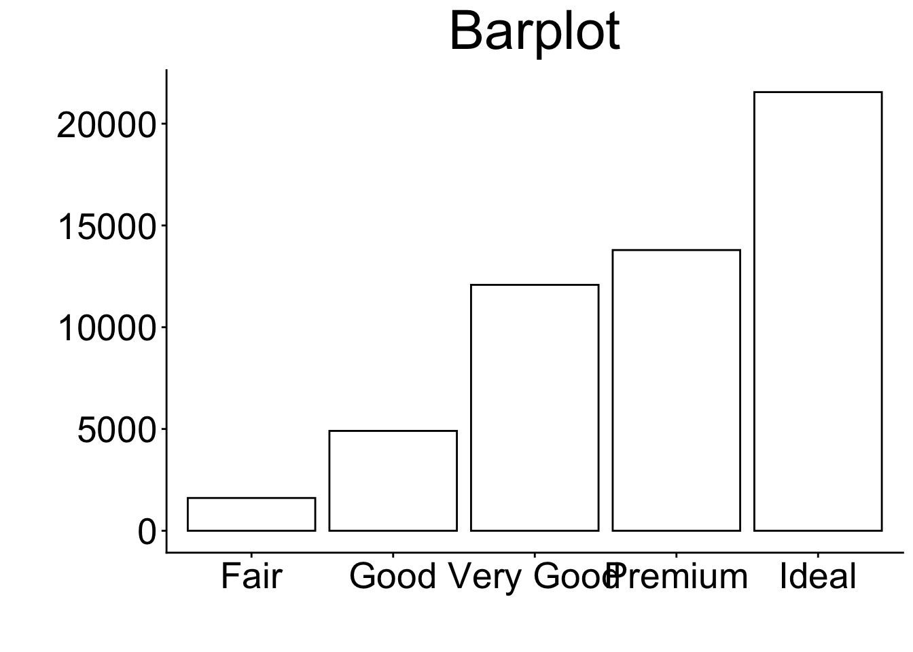
8 Graphical Visualization (with ggplot2)
Abstract
This chapter provides an introduction to graphical visualization using the ggplot2 package. It provides an overview of different types of plots and how to create them. It is also available as a Revealjs presentation.
Revealjs Presentation
If you want to see the presentation in full screen click here.
8.1 Purpose of Data Visualizing
The purpose of data visualizing is versatile as it…
facilitates understanding of data (i.e., makes data “accessible”)
reveals “hidden” structures, trends and patterns
identifies outliers
helps to communicate results clearly (storytelling)
…
8.2 (Some) Example Diagrams
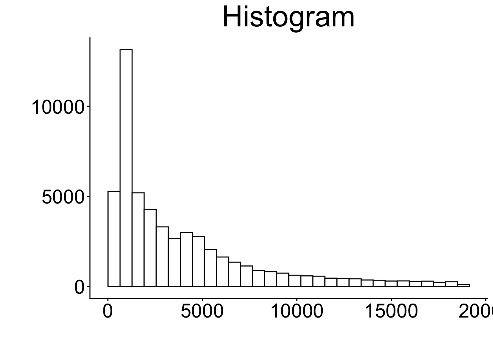
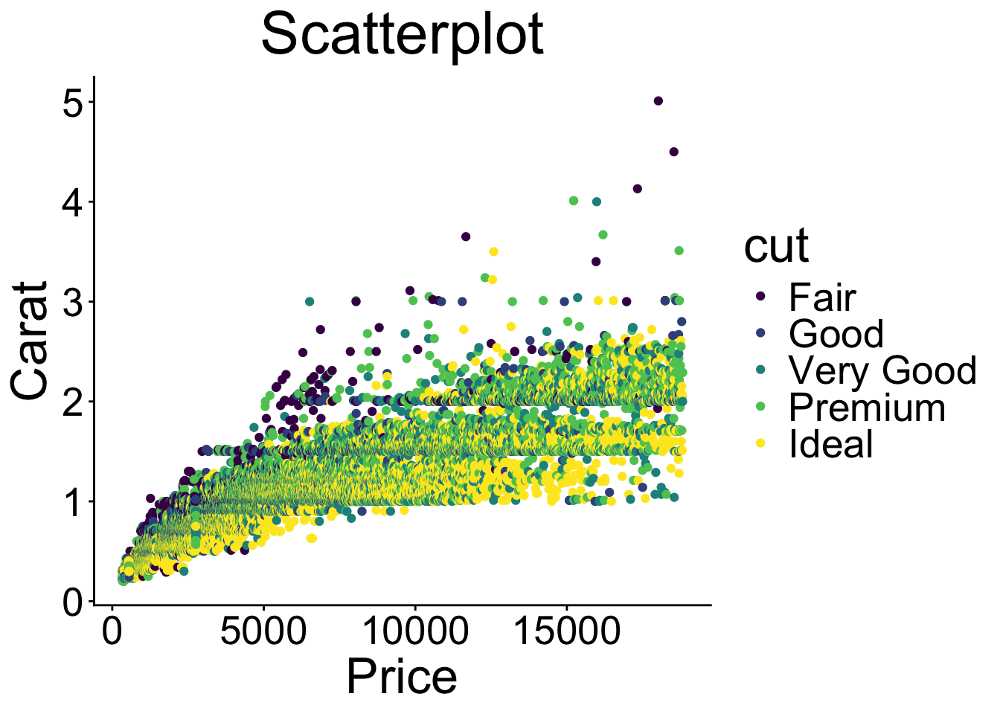
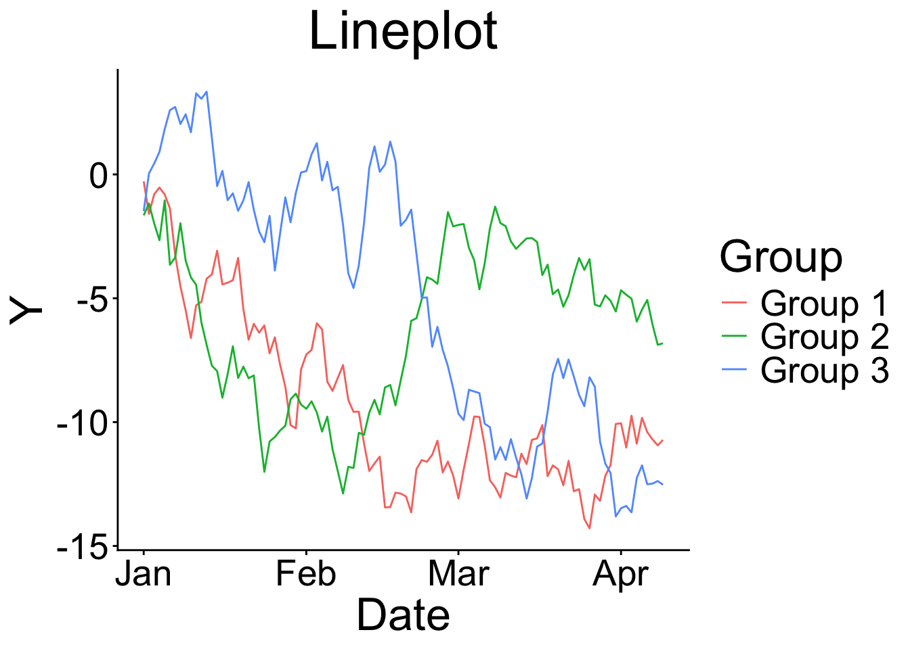
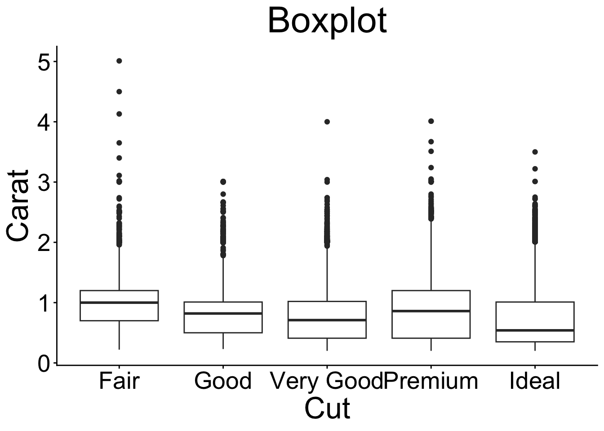
But there are more such as Dot plots, venn diagrams, maps, networks, & many more…!
8.3 The ggplot2 package
First of all, there are other graphical R packages such as:
- the
base(R Core Team, 2025) solution (e.g.,plot()function) latticepackage (Sarkar, 2008)plotlypackage (Sievert et al., 2026)- …
The ggplot2 package (Wickham et al., 2026) …
is based on the Grammar of Graphics (Wilkinson & Wills, 2005) → graphs can be composed by independent components
has great flexibility (and add-on packages) → nothing is impossible
has a broad community support (e.g., https://stackoverflow.com/), and AI tools help to generate
ggplot2codebelongs to the
tidyverse(Wickham, 2023) package collection
see Wickham (2011)
8.3.1 Key Components
Every ggplot needs 3 components to produce a plot:
- 1
- the data,
- 2
- the so-called aesthetic mappings (i.e., which variables from the dataset should be used and how should they be mapped in the plot), and
- 3
-
at least one layer that defines what kind of visualization is desired (e.g.,
geom_pointfor a scatter plot)
Note
Whereas the data and the aesthetic mappings (aes()) are stated within the ggplot() function, the geom_point layer is added with a +.
8.3.2 Getting Started with ggplot2
Setting a theme (optional). This can be done by using theme_set() function. There are some built-in themes such as theme_minimal(), theme_bw(), or theme_classic().
theme_set(theme_classic())Further, you can customize the theme by using theme_update() function. For example, you can change the text size, font family, and color.
8.4 Example Data
For this exercise, we use (again) a subset of the HSB dataset which is provided in the merTools package (Knowles & Frederick, 2025):
For more details on the dataset, see Chapter High School and Beyond.
8.5 Mapping Plot Types to geom_* Layers
To create different types of plots, you need to use different geom_* layers. Here are some examples:
8.6 Bar Chart
8.6.1 geom_bar layer (basic)
- 0
- Provide data and aesthetics mappings (see Key Components)
- 1
-
Add the
geom_bar()layer
Code
print(p_bp)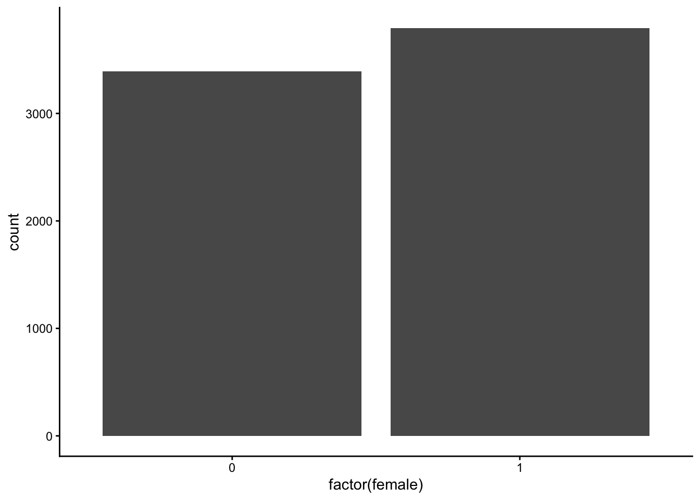
8.6.2 geom_bar layer (customized)
- 1
-
colorargument: Customize color of boarder - 2
-
linewidthargument: Customize size of boarder - 3
-
fillargument: Customize color of bars - 4
-
labelargument inscale_x_discretefunction can be used to provide labels for categories - 5
-
labsfunction: Customize text on x- and y-axes
Code
print(p_bp_c)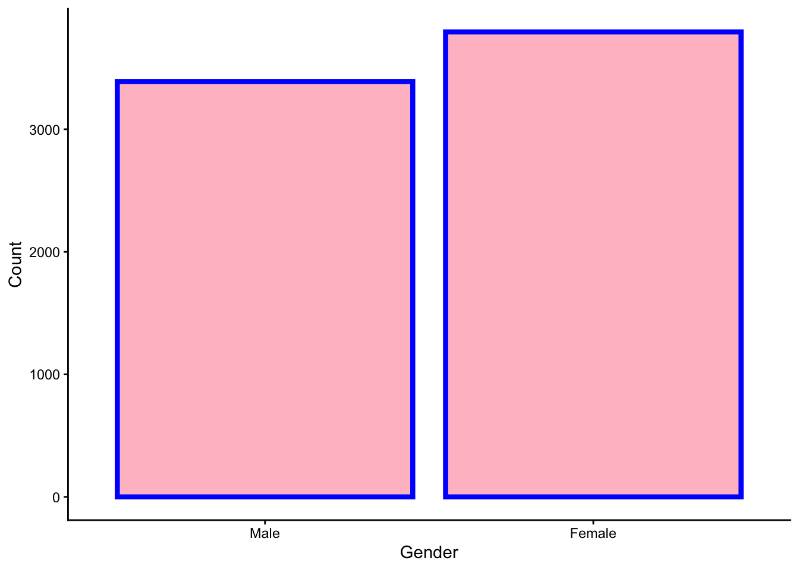
8.7 Histogram
8.7.1 geom_histogram layer (basic)
- 0
- Provide data and aesthetics mappings (see key components slide)
- 1
-
Add the
geom_histogram()
Code
print(p_hist)`stat_bin()` using `bins = 30`. Pick better value `binwidth`.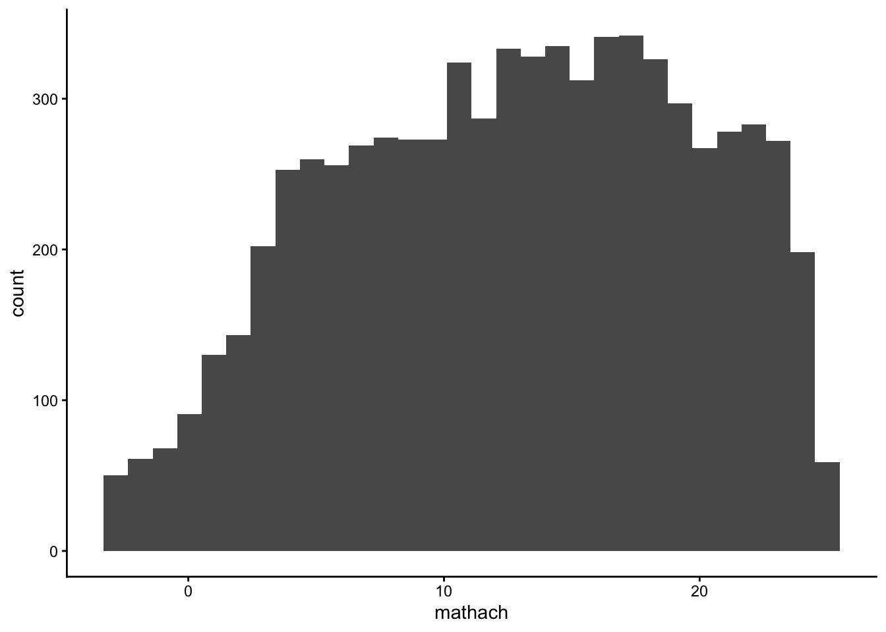
8.7.2 geom_histogram layer (customized)
- 1
-
color: argument for color of the boarders of the bars - 2
-
fill: argument for the color of the bars (do not use it together with the fill argument in theaes()!) - 3
-
binsargument: Number of bins - 4
-
binwidthargument: The width of the bins - 5
-
labslayer: Provide names of axis and title
Code
print(p_hist_c)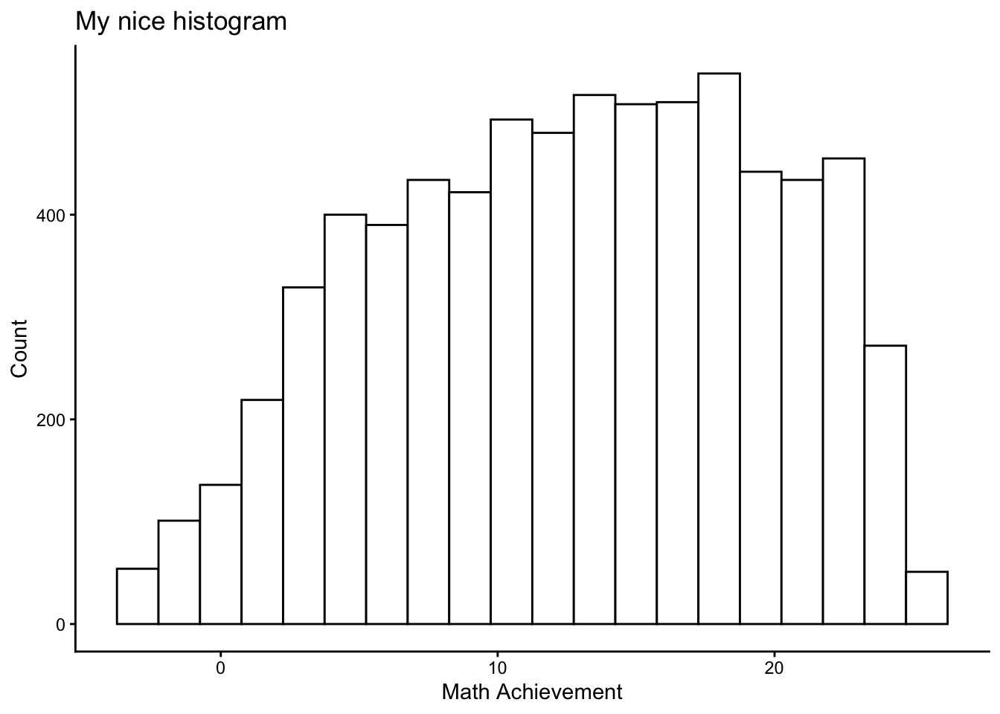
8.8 Scatterplot
8.8.1 geom_point layer (basic)
- 0
- Provide data and aesthetics mappings (see key components slide)
- 1
-
Add the
geom_point()
Code
print(p_scp)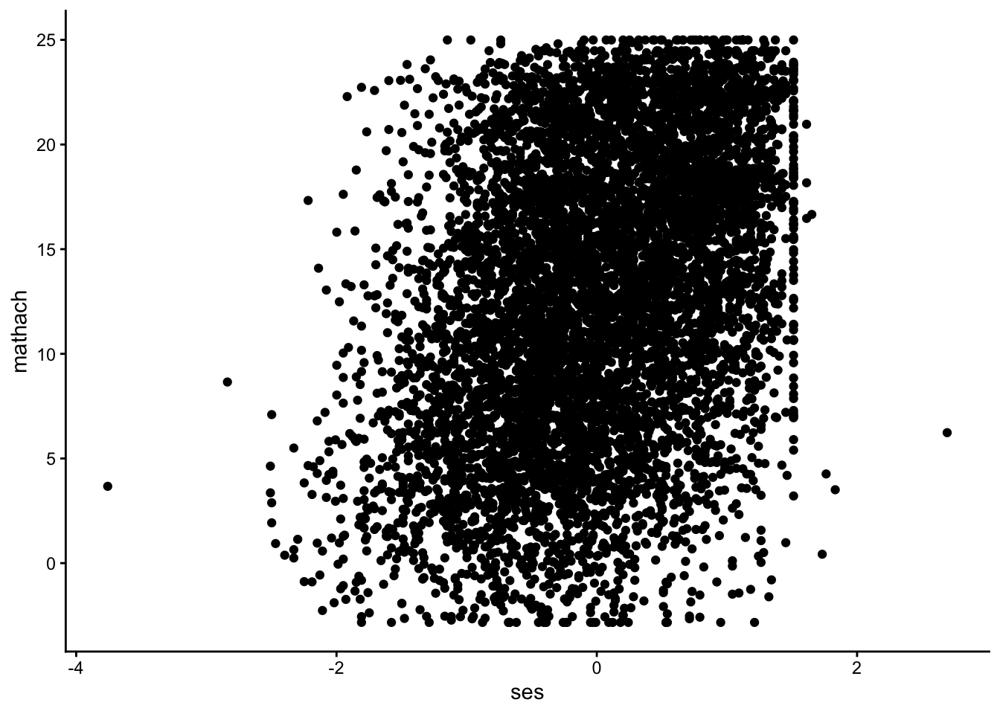
8.8.2 geom_point layer (customized)
- 1
-
color: argument for color of the boarders of the points (iffill\(\neq\)NULL). - 2
-
fill: argument for the color of the bars (do not use it together with the fill argument in theaes()!). - 3
-
sizeargument: Size of the points. - 4
-
shapeargument: Shape of the points (for more see https://ggplot2.tidyverse.org/articles/ggplot2-specs.html). - 5
-
labslayer: Provide names of axis and title.
Code
print(p_scp_c)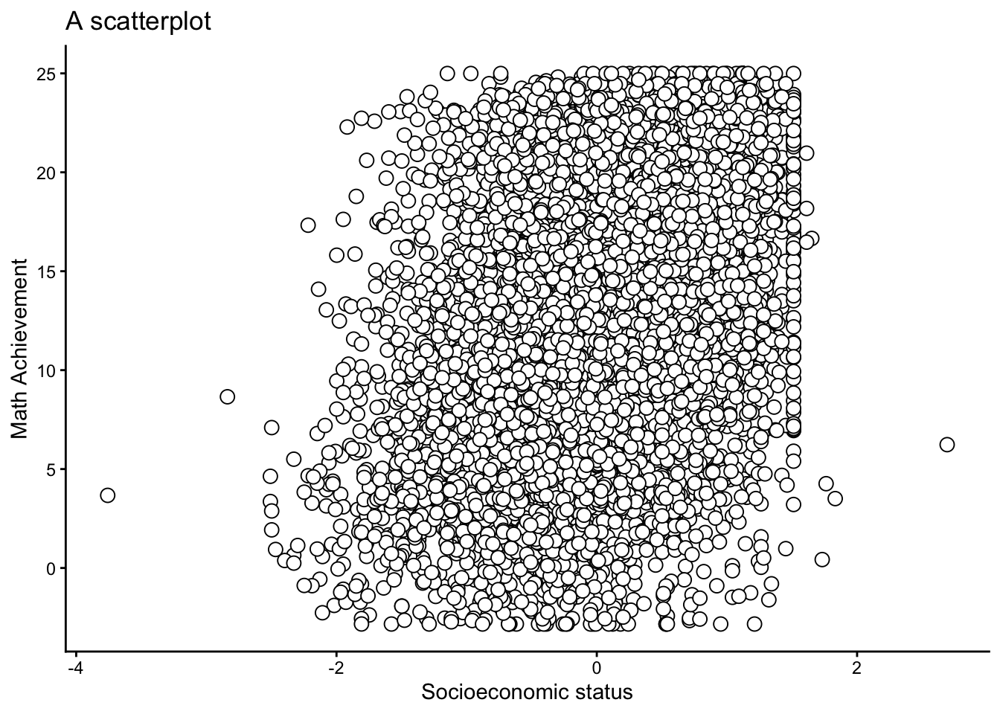
8.8.3 geom_point layer (colored by group)
p_scp_c2 <- ggplot(data = dat,
aes(y = mathach, x = ses)) +
1 geom_point(aes(color = factor(female)),
2 alpha = .5,
3 size = 2.5) +
4 scale_color_manual(
5 values = c("black", "red"),
6 labels = c("0" = "Male",
"1" = "Female")) +
7 labs(y = "Math Achievement",
x = "Socioeconomic status",
color = "Gender",
title = "A customized scatterplot")- 1
-
Use another aesthetic mappings (
aes()function) to provide information which points should be colored. - 2
-
alphaargument: Refers to the opacity of the points. - 3
-
sizeargument: Size of the points. - 4
-
scale_color_manuallayer: Customize the discretecolorscale. - 5
-
valuesargument: Change color - 6
-
labelsargument: Provide labels (alternatively, you could use thefactor()function in advance) - 7
-
labslayer: Provide names of axis, legend title, & title
Code
print(p_scp_c2)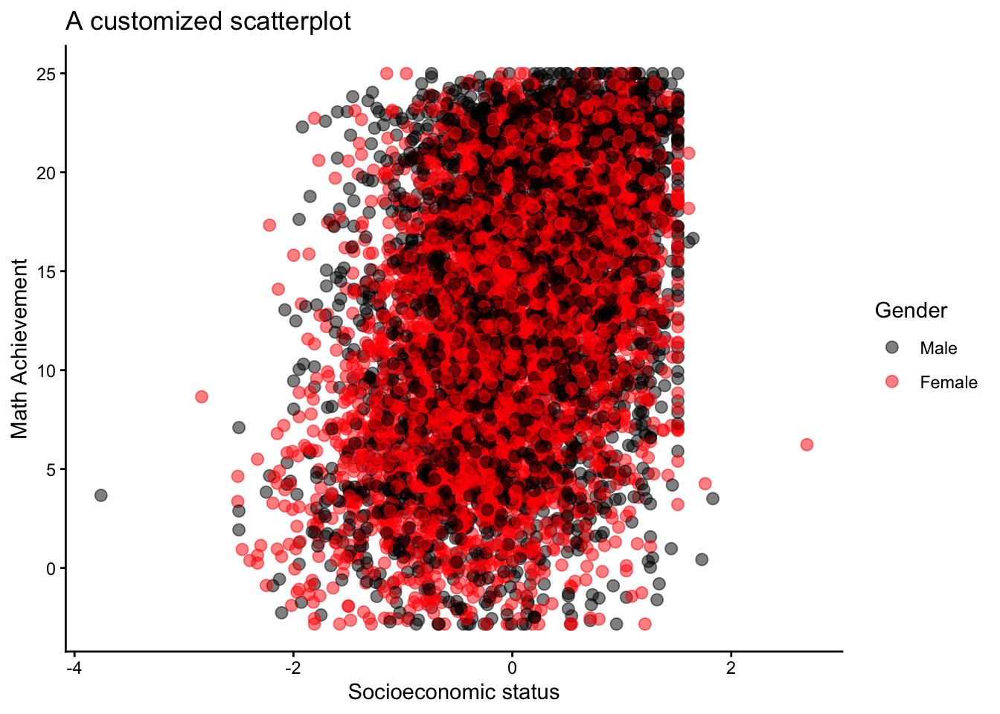
8.9 Boxplot
8.9.1 geom_boxplot layer (basic)
- 0
- Provide data and aesthetics mappings (see key components slide).
- 1
-
Add the
geom_boxplot().
Code
print(p_boxp)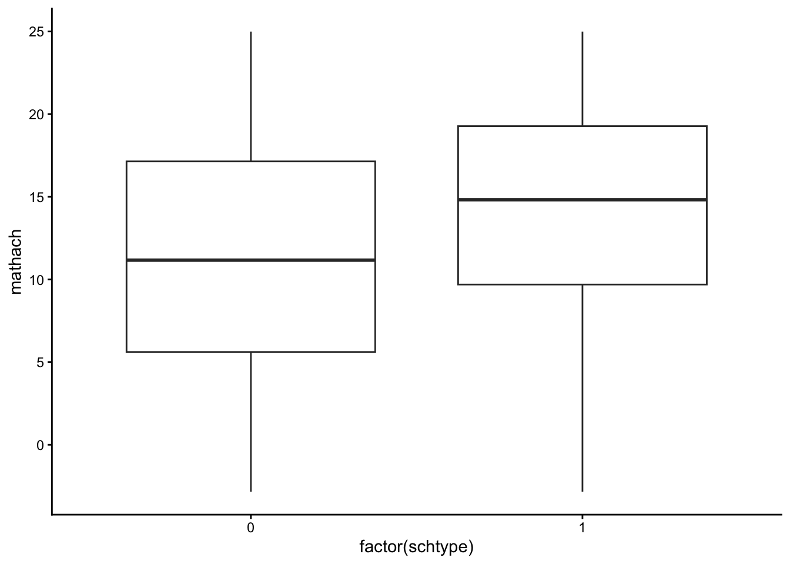
8.9.2 geom_boxplot layer (customized)
- 1
-
color: argument for color of the boarders of the points (iffill\(\neq\)NULL). - 2
-
fill: argument for the color of the bars (do not use it together with the fill argument in theaes()!). - 3
-
sizeargument: Size boarders. - 4
-
widthargument: Controls width of the bars. - 5
-
staplewidthargument: Controls the width of the staples. - 6
-
labslayer: Provide names of axis and title.
Code
print(p_boxp_c)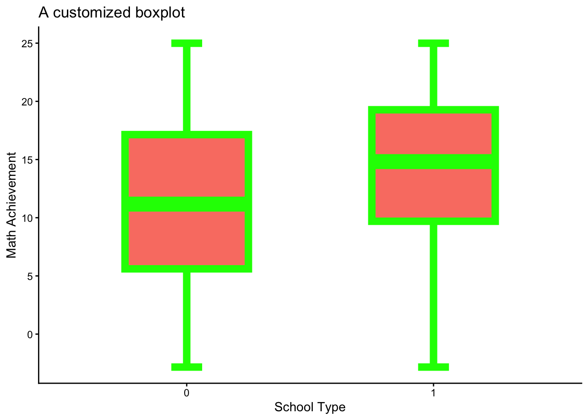
8.10 More Adjustment Options
8.10.1 Facetting plots
Facetting allows to split data into subsets and display them across different plots. This can be done with the facet_wrap() or facet_grid() functions. To demonstrate the facet_grid() option, I used the customized histogram (p_hist_c) which was generated here.
8.10.2 Labeling factors
Labeling factors may helpful for data visualization (not necessarily for data analyses!), because ggplot2 then directly access the labels. This can be done with the levels and labels arguments of the factor() function.
Check with the str() function.
str(dat$Gender) Factor w/ 2 levels "male","female": 2 2 1 1 1 1 2 1 2 1 ...8.11 Some Questions
NoteThis is work in progress…
… and needs to be completed.
How many components are required to create a ggplot2 visualization?
How do you add a new layer to a ggplot2 plot?